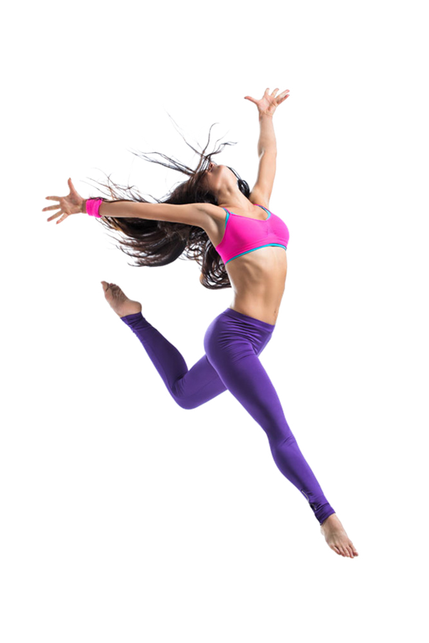

Our projects
Redback Operations aims to harness the power of IoT, AI and 3D game worlds to push your exercise routine into the future. We aim to provide a community-driven exercise and well-being gaming experience with competitive elements. By developing cutting-edge technologies and advances in the space of IoT sensors, AI and Game development, Redback Operations seeks to provide users with a fully immersive experience where they can engage with other users both casually and competitively or enjoy individual exercise routines all the while receiving real-time feedback and tips on how to improve their performance and be the best person that they can be. To achieve this goal, Redback operations have three main objectives:

Project 1: Project Sun Cycle
The project has the goal of creating a fun, beautiful single player game that users can play with their exercise bike. It’s a post-apocalyptic tribal world where players deliver packages between nomadic tribes on a junked-up pod-bicycle. The overall goal is to have a wide environment to ride around in with various missions available. Completing the missions will be a test of speed/endurance but may also include interesting gameplay choices relating to things such as fragile or perishable packages. By introducing fun gameplay mechanics and a beautiful landscape into their exercise routine, players will have more motivation to exercise on a regular basis.
Project 3: Camp Exercise Simulator
Building an interactive, learning and fitness VR camping experience provides our Redback Operation with an evolving platform that users can enjoy exercise and learn together within our design application. Camp Exercise Simulator is a single-player sports camping game. We will create one or more relatively real wild worlds in the game. Different worlds have different season styles. Each game world can be divided into multiple areas. Each area has different landform features, and players can perform some interactions and field sports according to different landform features. The main purpose of the project is to improve people's physical health so that players can understand and learn the skills and knowledge of camping in the wild. It includes playable and interactive sports elements, such as fishing, climbing, chopping firewood, and making a fire. VR devices and real-world future exercising equipment/technologies will be used as the basic equipment for the project. These interactive elements of movement will be combined with sensors so that players can feel the feeling of camping in the game, and finally achieve the purpose of exercising. Long-term goal: We will gradually develop more season-style wild worlds in the basic wild world, expand more areas (including more landform features), and add more interactive and movement elements. After the game is launched, the game will be the main sports VR game operated by Redback for players to purchase, to maintain the long-term operation of the game, and to gradually develop and improve various sports functions, expand the map, and ensure the growth of daily active players, including gameplay. And includes sportiness. Redback can also consider, partnering with potential camping and outdoors companies or tourism parks to be integrated within our developed application could be a possible income pathway that should be considered to benefit all stakeholders via advertisement promotions that are interactive within the experience.
Project 5: Sales and Marketability Analysis
Given the major focus on both game development and IoT sensor development that will be the hallmark of Redback Operations, the data science and analysis team believe it is important to become clear on the marketability of certain types of games and IoT sensors – and how the market behaves to the introduction of new technologies. To this end the team will seek to produce a number of analyses based on market trends in both the gaming space and the IoT sensor space. This should provide Redback Operations with both short and long-term solutions to the marketability of their products, and whether products they are currently working on are viable.
Project 7: Algorithm Prototype Development
The project has the goal of creating a fun, beautiful single player game that users can play with their exercise bike. It’s a post-apocalyptic tribal world where players deliver packages between nomadic tribes on a junked-up pod-bicycle. The overall goal is to have a wide environment to ride around in with various missions available. Completing the missions will be a test of speed/endurance but may also include interesting gameplay choices relating to things such as fragile or perishable packages. By introducing fun gameplay mechanics and a beautiful landscape into their exercise routine, players will have more motivation to exercise on a regular basis.
Project 9 Theme/Logo/General Marketing Design
A logo with a selected colour theme is one of the core hearts of the company because it is used to communicate the business values, culture, and ownership. The Company Logo with colour theme will be imprinted on every company product and, most importantly, our future clients' and customers' minds (grab attention and separate from competitor). From the long-term perspective, the company logo and the colour theme will foster brand loyalty and significantly create a strong impression of reputation when the company expands itself over time.
Project 11: Cyber Security Research and Initiatives
Given the foundational nature of Redback operations at this stage in the development process, the cyber security team is in an awkward position of having to test environments which do not yet exist. To overcome this problem, the cyber security team has split into three groups to engage in research and provide greater in-depth understanding of measures within the domains of IoT Security and Website security including but not limited to research into malicious code, account identity security and management, database storage security and IoT network security.
• The development of an engaged and self-sustaining online community • The ability to provide real-time performance feedback to users through cutting edge IoT sensors and AI • Fully immersive 3D worlds that users can experience from the comfort of their own homes. To be able to realize these objectives, Redback Operations has enlisted the skills and attributes of data scientists and analysts, IoT specialists, Game developers, cyber security specialists, web development, and DevOps experts all guided to success by a core team of project managers.
Project 2: Run With the Drawing
This project has the goal of encouraging people to get outside and exercise, and to explore the local area and perhaps take routes they haven’t gone down before. To achieve this, the app will, before leaving the house to exercise, give a user a randomly selected image or drawing, the goal of the run or bike ride is then to as closely as possible match the drawing on a map that tracks the users’ movements through streets and paths. At the end of the run or bike ride the user will get a score based on how closely they followed the prompt. The goal of this project is to have a working version, either a prototype or initial release, by the end of this trimester, that can then be expanded and improved upon in the future into a fully-fledged app available to the public.
Project 4: Data Storage Solutions
Data storage is an important component for any large-scale data driven initiative. The Data Science & Analysis team aims to identify, develop, and maintain a sophisticated data storage solution that is commensurate with the data that will be produced from our IoT sensor division and our game development division. By developing a sophisticated open-source data storage solution, we can potentially eliminate problems of scalability, security and uptime of our other projects that may be encountered in the future. This will include consultation with members of our IoT, DevOps and Game development teams in order to make seamless the ability to store data on the web site and how to implement data transfer from IoT into database storage
Project 6: Data Engineering
Data engineering is essential to any data-driven company. Much like data storage solutions, the implementation of successful data engineering processes can save a company time and valuable resources. The Data engineering wing of the Data Science and Analysis team is working hard on solutions to benefit company objectives related to data achieved through IoT, 3D game development and the overall goal of data engineering will be to gather data requirements (storage, usage, and systems access); maintain metadata documentation, and produce and document processes for data cleaning and pre-processing.
Project 8: Website Development and Mobile Application
Web Development and DevOps team is responsible for creating and maintaining company website and mobile application. The motivation behind building a dynamic and robust website for Redback Operations is to build a loyal online community. Having a website and mobile application which makes customers feel like they are a part of a movement which makes people healthier in a smart and fun way is an important part of the brand building process. The long-term goals of website and mobile application are as follows: • Community Centric Features: Different variations of leader boards which give users a sense of community. Users will be able to add other users as their friends and create custom challenges for their groups. • Incentive for doing more: The more users exercise, the more Redback coins they earn, the healthier they get. • Marketplace: Users can use their redback coins in a marketplace to buy all sorts of things from a range of different companies. A gym membership, 20% discount coupon for a pair of sports headphones or peanut butter. You name it, our marketplace will have it! • Live events: Users will be able to participate in live events which can take place for multiple days or weeks. There will be a participation fee and winners will get cash prizes and losers (who are now much healthier by the way) will receive redback coins. A win-win. An example of this is a marathon spanning 7 days. • Personalisation: Users will be able to access their historical data, look at their progress, how they earned their redback coins, set a custom goal, and receive a custom exercise plan according to their own availability to exercise. The thought behind all these features in the long term is to give a competitive edge to Redback Operations when the final product is ready for launch. These features will bring in revenue streams for the company and value to the customers which will make them engage with the product and company frequently.
Project 10: Official Redback Operations Website Design
An official company website is the first step for your business to go public while living in a digital world. The company website can achieve a marketing strategy and help the business grow. A welldesigned website is also essential to establish credibility and strengthen the business name. From the long-term perspective, the website can be used as the backbone for online brand presence to make announcements. This project will be developed in conjunction with the Web development team overseen by Akshat Arora
Project 12: IoT Sensor for Exercise Effectiveness
The project is to build an IoT System with wearable devices to measure the impact of an exercise on a person’s body. For example, standard pushups should begin with chest and stomach flat to the floor and should remain in a straight line while pushing up and coming back down. Not following the correct posture, could lead to injuries and not provide the desired result. This goes for all exercises. The main objective of the project is to develop an IoT System consisting of a variety of devices including sensors to detect posture, smart watches to detect fall and measure heartbeat rate, blood oxygen level. Long Term Goal: The project can be expanded to further test the effectiveness of different types of exercises. Furthermore, we could also integrate actuators into the system to provide real-time feedback to the user.